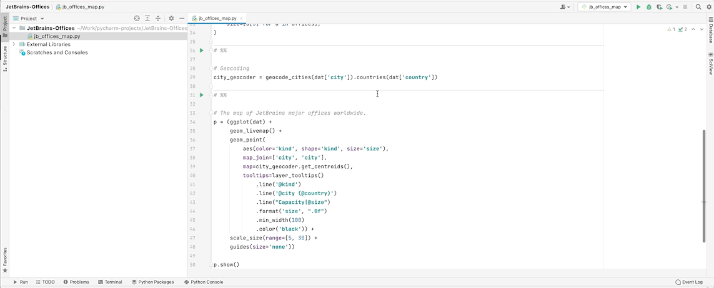
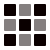

Maps¶
Create beautiful maps just by adding an interactive basemap layer to your plot: geom_livemap().
Proportional Symbol Map¶

ggplot(data) + geom_livemap(aes(..), symbol='point')
ggplot(data) + geom_livemap() + geom_point(aes(..))
Choropleth Map¶

ggplot(data) + geom_livemap() + geom_polygon(aes(..))
Combine Layers on Map ggplot2 Style¶
The following ggplot2 geometries can be used with interactive maps:
Primitives¶
point,
path,
tiles,
polygon,
map,
horizontal line,
vertical line,
rectangle,
segment,
text.
Contours¶
contour,
filled contour.
Bivariate Distribution¶
heatmap of 2d bin counts,
2d density,
filled 2d density.
Quickstart¶
Use a Basemap That is Right for You¶
Use quality Lets-Plot vector basemaps or choose among many raster map tiles available through 3rd party providers.
Learn more: Configuring Basemap Tiles for Interactive Maps.


PyCharm and DataSpell¶
Create maps in PyCharm or DataSpell with the help of Lets-Plot in SciView plugin.

GeoPandas Shapes¶
GeoPandas GeoDataFrame is supported by the following geometry layers: polygon, map, point, text, path, rect.
Learn more: GeoPandas Support.
Examples¶


Key Features¶


Grouping Plots
GGBunch shows a collection of plots on one figure. Each plot in the collection can have an arbitrary location and size.


Customizable Tooltips
You can customize the content, values formatting and appearance of tooltip for any geometry layer in your plot. Learn more.
Kotlin API
R, Python, what’s next? Right. Lets-Plot Kotlin API enables data visualization in JVM and Kotlin/JS applications as well as in scientific notebooks like Jupyter and Datalore.

Formatting
Lets-Plot supports formatting of numeric and date-time values in tooltips, legends, on the axes and text geometry layer. Learn more.


Sampling
Sampling is a special technique of data transformation, which helps to deal with large datasets and overplotting. Learn more.

Interactive Maps
Interactive maps allow zooming and panning around your geospatial data with customizable vector or raster basemaps as a backdrop. Learn more.

Export to SVG and HTML
The ggsave() function is an easy way to export plot to a file in SVG or HTML formats.

‘No Javascript’ and Offline Mode
In the ‘no javascript’ mode Lets-Plot generates plots as bare-bones SVG images. Plots in the notebook with option offline=True will be working without an Internet connection. Learn more.